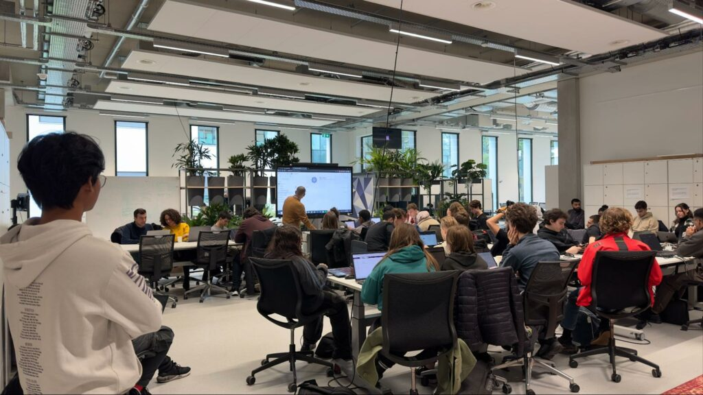

Gambar: Denta menyampaikan Presentasi didepan Kelas.
Gambar: Denta menyampaikan Presentasi didepan Kelas.
Mengambil langkah besar untuk menempuh pendidikan di luar negeri bukanlah keputusan yang mudah. Namun, Denta, mahasiswa Informatika IUP ITS, berhasil menaklukkan tantangan tersebut melalui program Double Degree di Fontys University of Applied Sciences, Belanda. Dengan kombinasi pendidikan berbasis riset di ITS dan pembelajaran berbasis proyek di Fontys, ia mendapatkan pengalaman akademik dan profesional yang luar biasa.
Ketertarikan Denta terhadap program Double Degree berawal dari keinginannya untuk merasakan pengalaman kuliah di luar negeri dan menghadapi tantangan baru. Dari beberapa universitas mitra ITS, ia memilih Fontys University karena kurikulumnya yang seimbang antara teori dan praktik, serta pendekatan pembelajaran berbasis industri. Selain itu, prospek kerja di Eropa setelah lulus juga menjadi pertimbangan utama. Dengan gelar dari universitas di Belanda, Denta memiliki peluang lebih besar untuk bekerja di berbagai negara kawasan Schengen tanpa perlu mengurus visa kerja tambahan dalam beberapa tahun pertama setelah kelulusan.
Menempuh pendidikan di dua universitas dengan sistem pembelajaran yang berbeda menjadi tantangan tersendiri bagi Denta. ITS lebih menekankan teori dan riset akademik, sementara Fontys mengedepankan pembelajaran berbasis proyek dan keterlibatan industri. Perbedaan ini mengharuskannya untuk beradaptasi dengan cara belajar yang lebih mandiri dan aplikatif. Selain itu, kendala bahasa dan budaya juga menjadi tantangan lain. Cara komunikasi orang Belanda yang blakblakan dan to the point cukup berbeda dengan budaya komunikasi di Indonesia yang lebih mengutamakan kesopanan dan empati. Namun, pengalaman ini justru membantu Denta mengembangkan keterampilan komunikasi lintas budaya dan memperluas wawasannya.

Gambar: Denta Saat Menjadi Asisten Pengajar untuk Lokakarya Git.
Belajar di Fontys memberikan pengalaman tak terlupakan bagi Denta. Sistem pembelajaran berbasis proyek membuatnya terbiasa menyelesaikan studi kasus nyata dan bekerja dalam tim lintas negara. Selain itu, kesempatan untuk mengajar mahasiswa semester dua tentang Git bersama teman-teman ITS menjadi pengalaman berharga yang memperkaya keterampilannya. Salah satu momen penting dalam studinya adalah graduation internship di perusahaan ROOSH (Vliegenenparkeren), di mana ia mendapatkan pengalaman langsung di industri teknologi. Persiapan defense dilakukan dengan matang, termasuk melakukan simulasi presentasi di perusahaan tempatnya magang. Hasilnya, Denta berhasil menyelesaikan defense dengan nilai A, sebuah pencapaian yang membanggakan.
Setelah menyelesaikan program Double Degree, Denta akan melanjutkan kariernya sebagai junior full-stack developer di perusahaan tempatnya magang. Selain itu, ia berencana untuk terus mengembangkan keterampilannya melalui pelatihan dan sertifikasi tambahan. Dalam jangka panjang, ia bercita-cita untuk berkontribusi lebih besar di industri teknologi, baik melalui peran strategis maupun dengan membangun bisnis teknologi sendiri di Indonesia.
Denta juga ingin menerapkan pengalaman dan ilmu yang didapatnya di Belanda ke industri teknologi Indonesia. Salah satu hal yang ia soroti adalah pentingnya user experience (UX) dalam pengembangan produk, serta budaya disiplin dan efisiensi kerja yang tinggi di Belanda. Menurutnya, inovasi berbasis kebutuhan pengguna dapat membantu menciptakan teknologi yang lebih efektif dan bermanfaat di Indonesia.